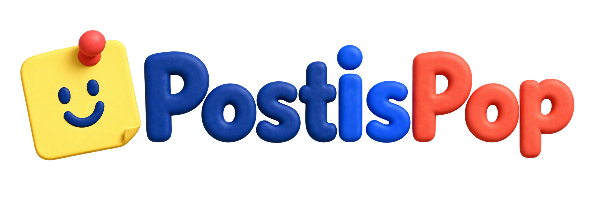

PostisPop: tu bloc de notas y pizarra virtual
Organiza tu espacio personal o colabora en tiempo real.
Crea tu bloc de notas personal y organiza tus ideas
Pizarras de post-it compartidas para colaborar en tiempo real
Leyendo…
POSTISPOP / BETA
Leyendo…Toca cualquier nota. Es tuya.